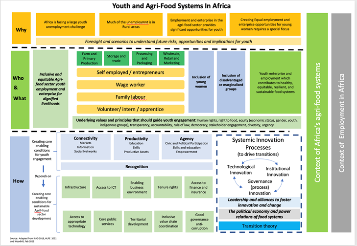

Visualizing Youth Employment and Agrifood Futures
Quarto
This document is produced using Quarto (see https://quarto.org in R) and offers an example of how we might create web files that contain text and interactive visualizations to support the June workshop in Mombasa.
Web Site Structure
This is a one-page example and could include hyperlinks to other pages that examine specific linkages. For example, this could be a structural transformation page and include links to other pages that explore employment trends across varying levels of economic development.
Embedding Static Images
There are some images from reports/papers that on a standalone basis can stimulate important conversations and it’s important for our chosen presentation medium to be able to include those.
Here is an example

Interactive Plot Example: Agriculture’s Contribution to GDP Declines in Wealth
A signature component of structural transformation is the declining importance of agriculture as a share of a country’s GDP as GDP increases. This interactive visualization enables users to identify trends between GDP per capita and agriculture’s contribution to GDP. Users interested in a specific country can make their selection by clicking on the right. Hovering over any data point displays its actual x and y values. Portions of the plot can be zoomed in on or highlighted by respectively using the zoom and lasso functions.